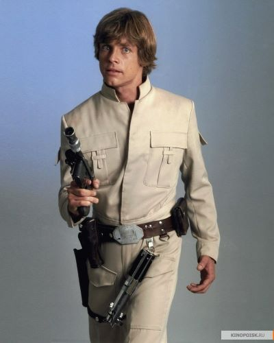
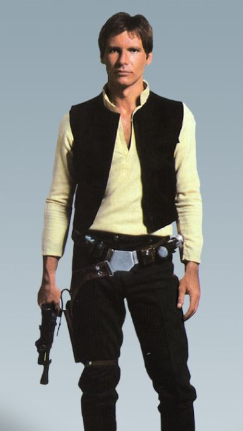
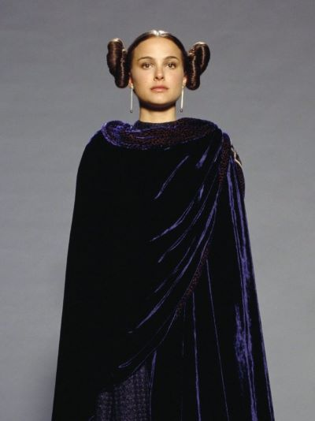
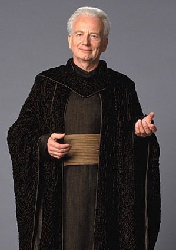

Лея Органа
Люк Скайуокер
Хан Соло
Энакин Скайуокер
Падме Амидала
Оби-Ван Кеноби
Палпатин
Йода
Чубакка
Лея Органа
Лея была дочерью рыцаря-джедая Энакина Скайуокера и сенатора Падме Амидалы. Её мать умерла при родах, а отец пал на Тёмную сторону Силы и стал лордом ситхов Дартом Вейдером. Лея, которую отец считал умершей, была удочерена сенатором Бейлом Органой и его женой королевой Брехой, получив статус принцессы Альдераана. Позже она заняла место своего приёмного отца в Сенате, помогая ему вести борьбу против Империи. За свою жизнь она исполняла обязанности принцессы Альдераана, члена Имперского Сената, лидера Альянса за восстановление Республики и затем Новой Республики, а также являлась учредителем и генералом Сопротивления. Она сыграла важную роль в поражении Галактической Империи в Галактической гражданской войне и вела борьбу с Первым орденом после его возникновения.
Люк Скайуокер
Люк Скайуокер был сыном падшего рыцаря-джедая Энакина Скайуокера и сенатора Падме Амидалы, и братом-близнецом Леи Органы. Люка и Лею разделили и мальчика забрал мастер-джедай Оби-Ван Кеноби, который отвёз его на планету Татуин, где передал младенца на воспитание его дяде и тёте Оуэну и Беру Ларс, чтобы спрятать его от Галактической Империи.
Люк обучался у Оби-Вана Кеноби и Йоды и стал джедаем. Вместе Леей Органой и Ханом Соло он был участиком повстанческого альянса, борющегося с Галактической Империией. Он сыграл ключевую роль в поражении Галактической Империи и свержении ситхов во время Галактической гражданской войны. Он смог вернуть отца на светлую сторону силы и вместе они победили зло.
Хан Соло
Хан Соло был контрабандистом, перевозившим тайно грузы по всей галактике на своём корабле, Соколе Тысячелетия, который был самым быстром кораблём своего времени. Его верным помощником был вуки Чубакка. Позже он вместе Люком Скайуокером примкнул к повстанцам, борющимися с Галактической Империией. Он сыграл важную роль в уничтожении первой и второй звезды смерти, а также в победе над Империией в целом.
Энакин Скайуокер
Энакин Скайуокер родился на планете Татуин и рос рабом. В юном возрасте его обнаружили мастер-джедай Квай-Гон Джинн и рыцарь-джедай Оби-Ван Кеноби, которые освободили его из рабства и представили мальчика Ордену джедаев; Квай-Гон верил, что Энакин являлся Избранным из пророчества джедаев, которому было предначертано уничтожить ситхов и принести равновесие в Силу.
В годы предшествующие разрушительному галактическому конфликту, известному как Войны клонов, Энакин был учеником Оби-Вана Кеноби. После битвы на Джеонозисе, положившей начало этому конфликту, Скайуокер тайно женился на сенаторе Падме Амидале.
К концу войны Скайуокер узнал, что станет отцом, когда Амидала сообщила новость, что беременна их первым ребёнком. Но вскоре радость сменилась подавляющей скорбью, когда Энакин увидел видение смерти жены при родах. Стремление Энакина уберечь любимую от гибели привело его на Тёмную сторону Силы, он перестал быть Энакином Скайуокером и стал ситхом Дартом Вейдером.
Падме Амидала
Падме Амидала родилась на планте Набу. Она была Королевой Набу, отстаивала права и свободы местных жителей, что сделало её самым уважаемым политиком в Галактике. Несмотря на относительно короткую жизнь, она сыграла важную роль в политических событиях в преддверии Войн клонов. Настойчивая и упорная в достижении своих целей, обладающая гордой и страстной натурой, не по годам глубоким и мудрым умом, Падме Амидала всю свою жизнь посвятила служению народу Набу. Исполняя священный долг королевы, она уверенно вела свою планету через все многочисленные испытания и трудности. Во времена, когда планета оказывалась на грани войны, занимая также и пост Сенатора Республики, она всегда пыталась руководствоваться здравым рассудком и трезвым взглядом на ситуацию
Падме была тайной женой Энакина Скайуокера. У них родилось двое детей: Люк и Лея, две самые значимые фигуры галактической истории.
Оби-Ван Кеноби
Оби-Ван Кеноби, позднее известный как Бен Кеноби — легендарный мастер-джедай, человек, сыгравший значимую роль в судьбе галактики в дни увядания Галактической Республики. Он был падаваном мастера Йоды и рыцаря-джедая Квай-Гона Джинна, а затем, после его смерти, взял в ученики Энакина Скайуокера. После падения Энакина на Тёмную сторону он отправился на Татуин, где присматривал за Люком Скайуокером. Позднее когда тот вырос, он стал его учить мастерству джедаев.
Шив Палпатин
Палпати́н, также известный как Дарт Си́диус, — последний Верховный Канцлер Республики и первый император Галактической Империи, обладавший огромной мощью. Он был тёмным лордом ситхов, который был самым влиятельным лордом, которого когда-либо знала Галактика. Также он имел острый интеллект и был способен предвидеть различные варианты будущего: фактически именно он превратил Старую Республику в Империю и уничтожил почти всех джедаев. На всё это у Палпатина ушли десятилетия упорного труда.
Йода
Йода является одним из самых старых членов Совета джедаев и, скорее всего, самым мудрым и сильным джедаем своего времени; такое высокое положение, конечно же, было основано на очень солидном возрасте Йоды. У Йоды на обучении находились такие выдающиеся джедаи, как граф Дуку, Квай-Гон Джинн, Мейс Винду, Оби-Ван Кеноби (лишь некоторое время, пока его не принял в ученики Квай-Гон Джинн), и Люк Скайуокер. Помимо этого, он вёл подготовительные занятия почти с каждым молодым джедаем в Галактике в Храме джедаев, прежде чем они были приставлены к наставнику. Следует уточнить, что к наставнику приставляли падавана, а ещё раньше падаван был юнлингом (как раз они и не имеют ещё наставника). Их можно встретить во втором эпизоде, когда Оби-Ван спрашивает магистра Йоду о планете Камино, тогда-то один из юнлингов помогает разобраться, почему её нет на карте, и в третьем, там, где их убивает обратившийся в Дарта Вейдера Энакин Скайуокер.Йода сумел выжить после массового уничтожения джедаев. После неудачной дуэли с Дартом Сидиусом ушел в добровольное изгнание на планету Дагоба, где умерестественной смертью.
Чубакка
До падения Галактической Республики Чубакка принимал участие в Войнах Клонов в битве при Кашиике, командуя силами Республики. Тогда Чубакка помог джедаю Йоде отбиться от клонов, хотевших его убить по приказу Дарта Си́диуса, и покинуть планету.
После падения Галактической Республики в конечном итоге Чуи стал со-пилотом Хана Соло и первым помощником на его корабле «Тысячелетний сокол». Вместе они занимались контрабандой, а позже примкнули к повстанцам, борющимися с Галактической Империией. Он сыграл важную роль в уничтожении первой и второй звезды смерти, а также в победе над Империией в целом.